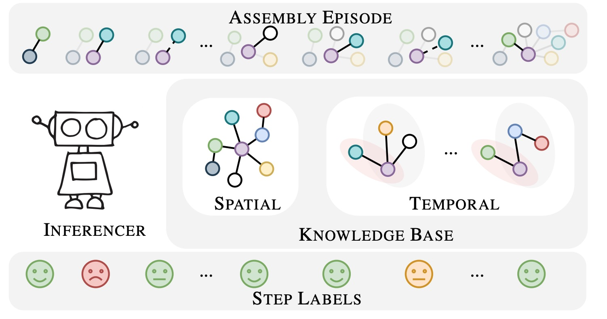
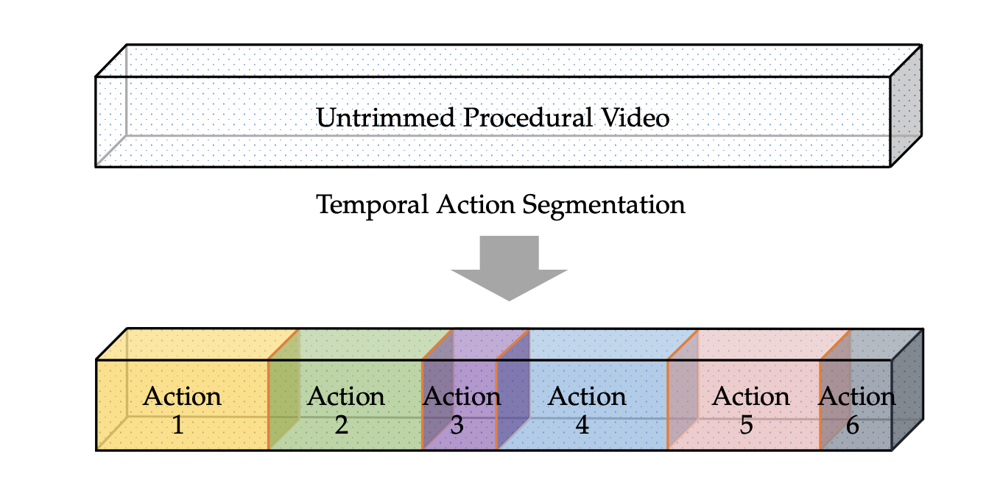
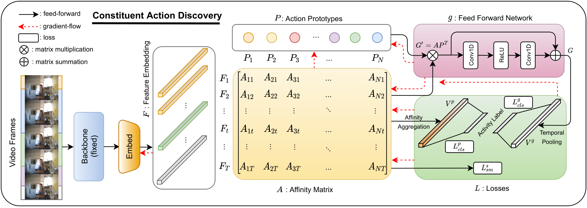
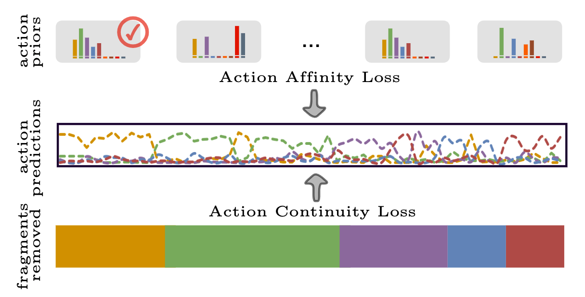
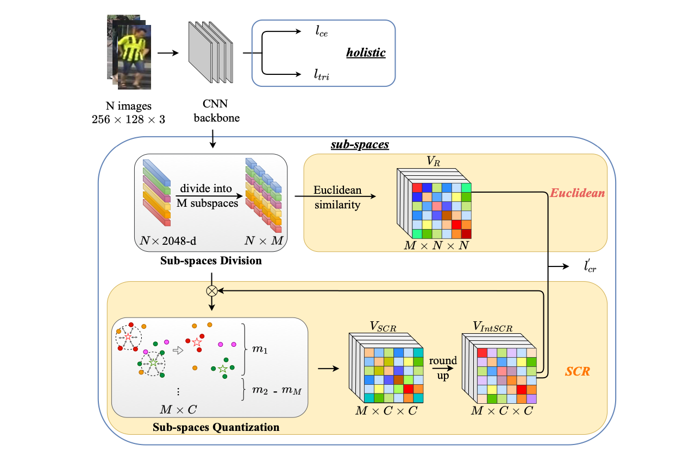

Projects
Action Understanding
2024
OnlineTAS: An Online Baseline for Temporal Action SegmentationWe present the first online framework for temporal action segmentation. At the core of the framework is an adaptive memory designed to accommodate dynamic changes in context over time, alongside a feature augmentation module that enhances the frames with the memory. Our approach achieves state-of-the-art performance on three common segmentation benchmarks. |
 |
Coherent Temporal Synthesis for Incremental Action SegmentationWe propose a Temporally Coherent Action (TCA) model, which represents actions using a generative model instead of storing individual frames. The integration of a conditioning variable captures temporal coherence, allowing our model to understand the evolution of action features over time. In a 10-task incremental setup on the Breakfast dataset, our approach achieves significant increases in accuracy for up to 22% compared to the baselines. |
|  | Ordering Mistake Detection in Assembly TasksWe introduce a novel task of detecting ordering mistakes in assembly tasks. We propose a two-stage framework that first segments the video into action segments and then detects ordering mistakes by comparing the predicted sequence with the ground truth. We also contribute a new dataset, Assembly101-Mistake, containing 785 videos with ordering mistakes across 7 assembly tasks. |
2023
|  | Temporal Action Segmentation: An Analysis of Modern TechniquesWe present a comprehensive survey and analysis of modern temporal action segmentation techniques. Our work covers the evolution of approaches, from early frame-wise methods to recent transformer-based models. We also provide an in-depth discussion on datasets, evaluation metrics, and future research directions in this field. |
2022
|  | Temporal Action Segmentation with High-level Complex Activity LabelsWe propose a novel approach for temporal action segmentation that incorporates high-level complex activity labels. Our method leverages the hierarchical structure of activities to improve segmentation accuracy. We demonstrate significant performance improvements on benchmark datasets, particularly for long and complex action sequences. |
|  | Leveraging Action Affinity and Continuity for Semi-supervised Temporal Action SegmentationWe propose a semi-supervised approach for temporal action segmentation that leverages action affinity and continuity. Our method uses a small amount of labeled data to guide the learning process on a larger set of unlabeled videos. By exploiting the inherent temporal structure and similarities between actions, we achieve competitive performance with limited supervision on standard benchmarks. |
Person Re-identification
2024
2023
|  | Rapid Person Re-Identification via Sub-space Consistency RegularizationWe propose a novel method for rapid person re-identification using sub-space consistency regularization. Our approach enforces consistency between different sub-spaces of the feature representation, leading to more robust and discriminative features. This method achieves competitive performance while significantly reducing computational costs. |
2021 and before
Multi-View Label Prediction for Unsupervised Person Re-identificationWe introduce a multi-view label prediction approach for unsupervised person re-identification. By leveraging multiple views of unlabeled person images, our method generates more reliable pseudo-labels, enabling effective feature learning without manual annotations. Experiments demonstrate substantial improvements over existing unsupervised re-identification methods. |
 |
Dispersion-based Clustering for Unsupervised Person Re-identificationWe propose a novel unsupervised person re-identification method using dispersion-based clustering. Our approach leverages the inherent dispersion of unlabeled person images to create pseudo-labels, enabling effective feature learning without manual annotations. Experiments on multiple datasets demonstrate significant performance improvements over existing unsupervised methods. |
 |
Feature Affinity based Pseudo Labeling for Semi-supervised Person Re-identificationWe introduce a semi-supervised approach for person re-identification using feature affinity-based pseudo labeling. Our method effectively utilizes both labeled and unlabeled data by exploiting feature similarities to generate reliable pseudo-labels. This approach significantly improves re-identification accuracy with limited labeled data on standard benchmarks. |
Feature Mask Network for Person Re-identificationWe present a Feature Mask Network (FMN) for person re-identification. Our approach learns to mask irrelevant features while highlighting discriminative ones, leading to more robust person representations. Extensive experiments show that FMN achieves state-of-the-art performance on multiple person re-identification datasets. |